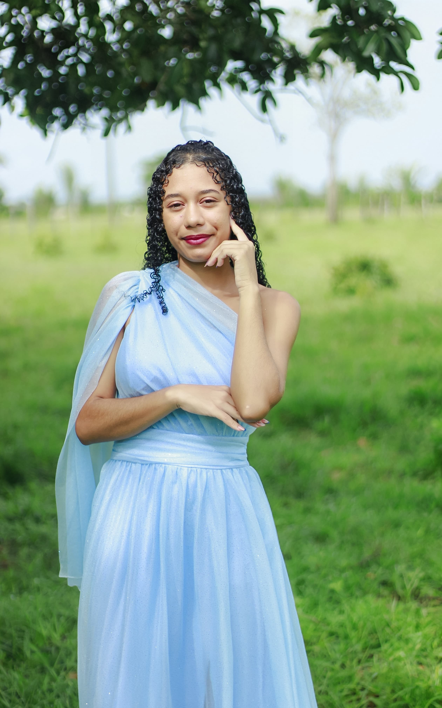
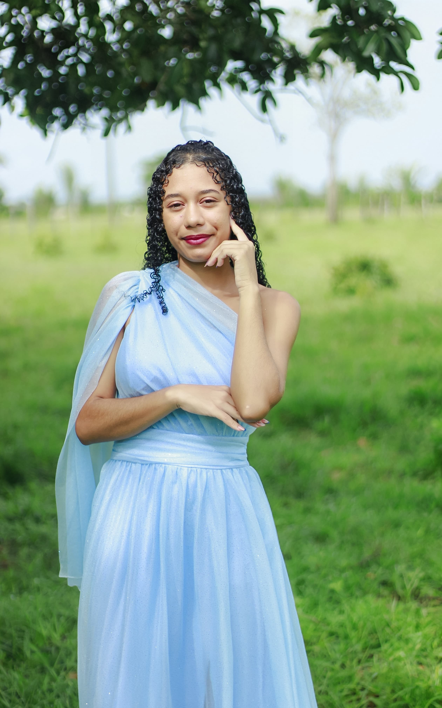

INTRODUÇÃO
O Quilombo Queluz, em Anajatuba-MA, originou-se em 1890. Em 1997 foi fundada a associação de moradores. A comunidade possui 409 habitantes (145 famílias), com maioria das moradias em alvenaria (programa Minha Casa Minha Vida).
Representamos um importante polo de cultura, tradição e ancestralidade, fundamentais para nossa identidade e resistência.

 
